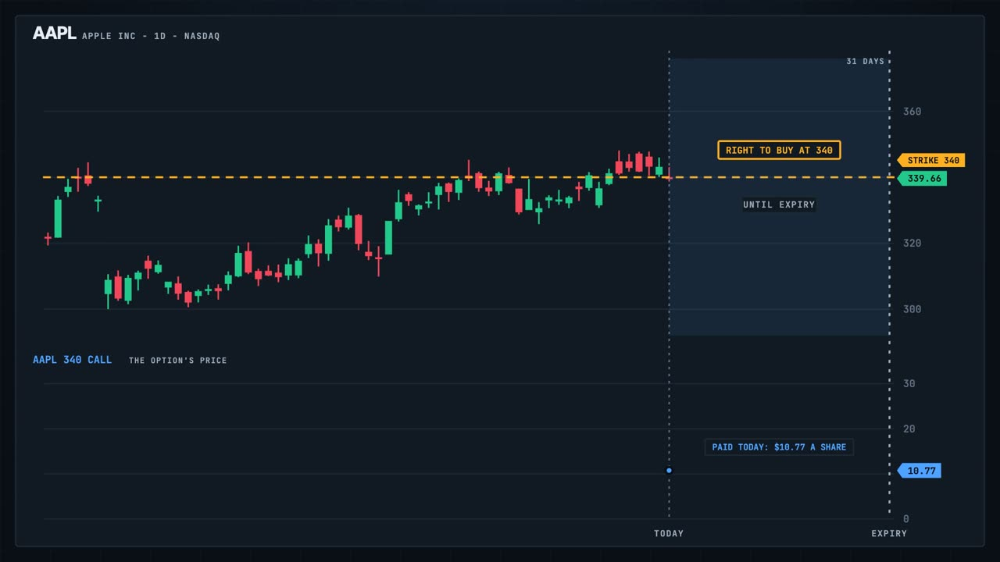
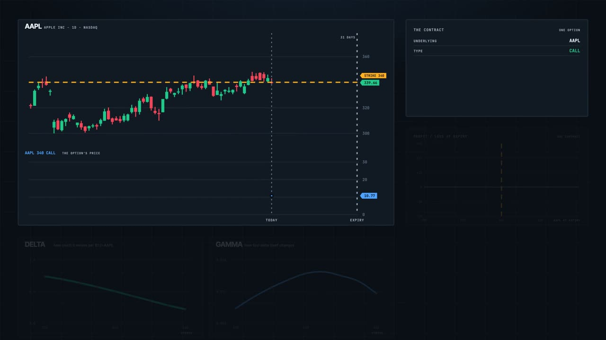
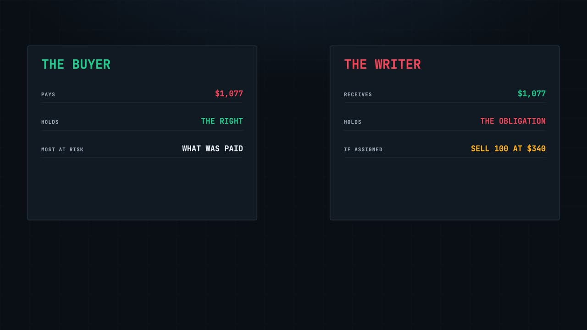
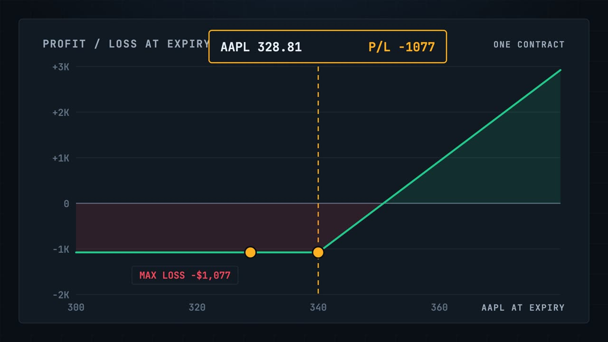
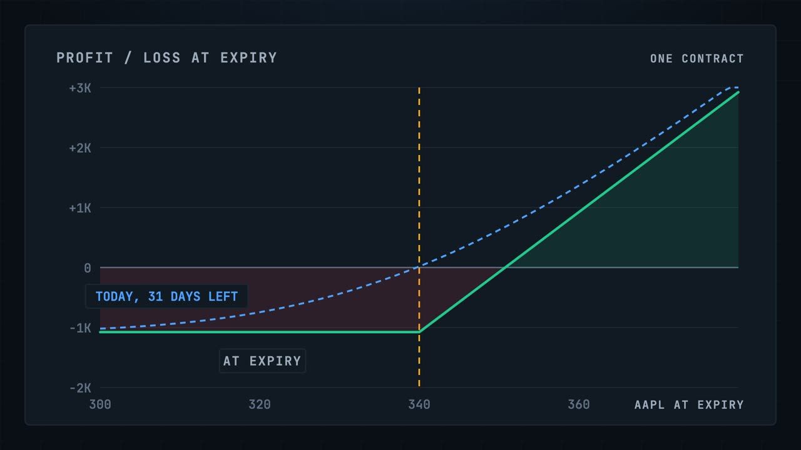
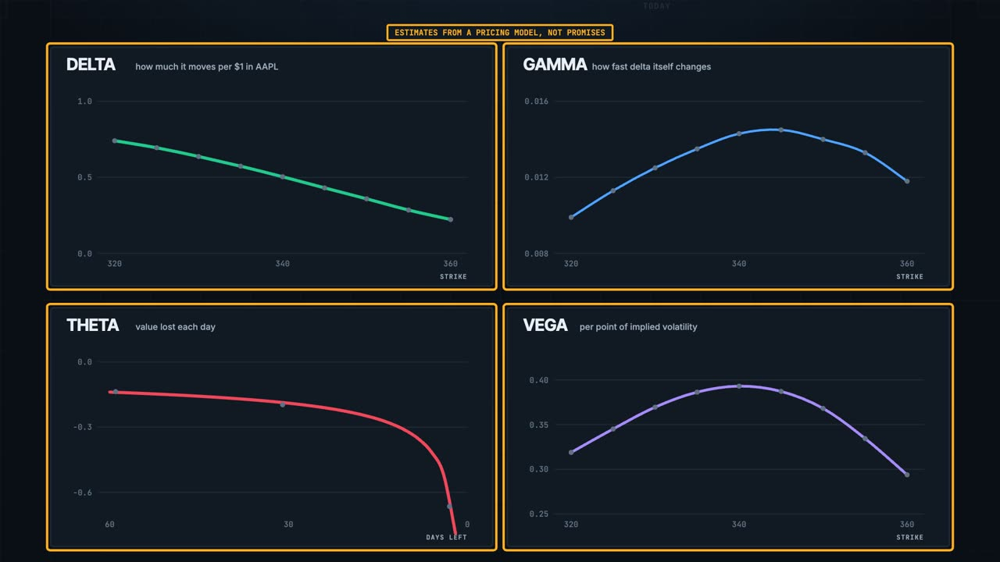
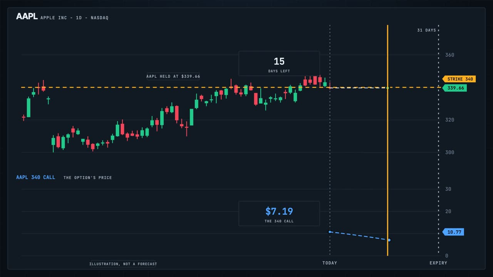
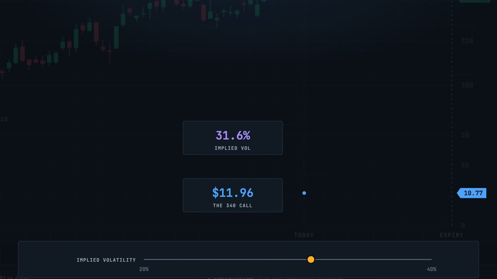
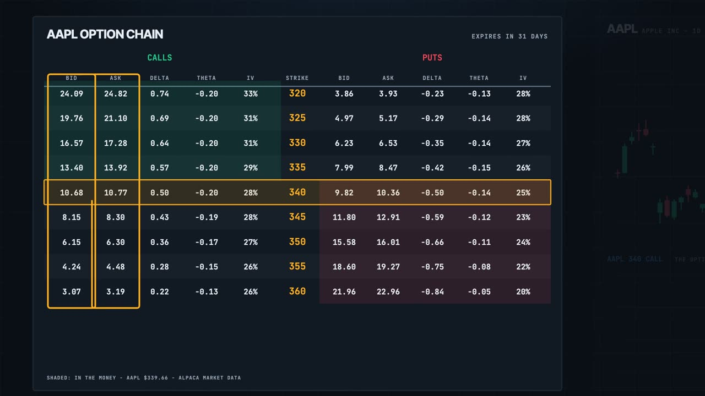
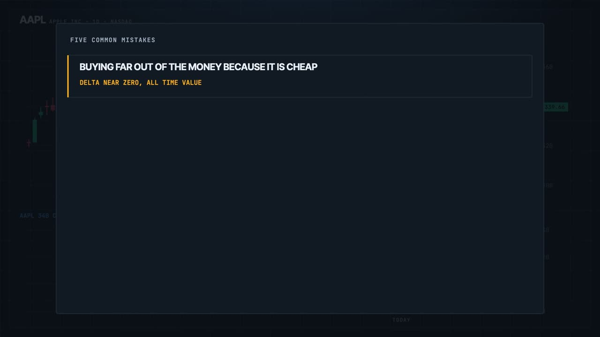

Lessons / Options, earnings and volatility
Options Explained Simply: Calls, Puts and the Greeks in One Picture (Delta, Gamma, Theta, Vega)
Options from nothing to the Greeks, drawn on one trading desk with real Apple prices: the share's chart with the strike and expiry, the contract, profit and loss at expiry, the option chain and the four Greeks, every number moving with the price or the date. What an option is (a call is the right to buy, a put the right to sell), what is on every contract, buyers and writers, exercise and assignment, in, at and out of the money, the four payoff lines and break-even, intrinsic and time value, then delta, gamma, theta, vega and implied volatility, read on a real Apple option and in TradingView's options strategy builder. For beginners, and for anyone who trades options and wants a clean refresher. For education only, not financial advice.
Prices and numbers are as of the video's publication, October 21, 2026.
The share and its option Watch from 0:00
Here is everything we will use: the option chain, the contract, its profit and loss, and the four Greeks that measure its price.
Options basics were among the first things this channel covered, a while back. This is a fresh take on them: today's real prices, a real option chain, and every idea drawn so you can watch it move. If options are new to you, it starts from nothing, one idea at a time. If you already trade them, each chapter is a refresher you can jump straight to.
We will build it on one real example: a call option on Apple, with the real prices from one afternoon.
By the end, every panel here will read as plainly as a price chart.
What an option is Watch from 1:20

An option is a contract. A call option gives you the right to buy a stock at a fixed price, called the strike, on or before a set date, called expiration.
Ours is the right to buy Apple at $340, any time in the next 31 days.
That right has a price, paid up front: the premium. Here, $10.77 a share. Think of it as a reservation fee that locks in the price.
Now, two possible endings.
If Apple finishes at 365, your right to buy at 340 is worth $25 a share. You can use it, or simply sell the option, which now carries that value.
If Apple finishes at 320, a right to pay 340 is worth nothing. You let it expire. You lose the premium you paid, and not a cent more. That is the point of an option: the right, never the obligation.
A put is the mirror image: the right to sell at the strike, on or before expiration. The Apple put with the same strike cost $10.36.
If Apple falls, the right to sell at 340 becomes valuable, and the put rises as the stock drops. That is why people buy puts as insurance on shares they own.
What is on every contract Watch from 2:37

Every option, on every broker, is described by the same few fields. First, the underlying: what it is an option on. Here, Apple's stock.
Second, the type: a call, the right to buy, or a put, the right to sell. Ours is a call.
Third, the strike price: the fixed price in the contract. Ours is $340, the dashed line on the chart.
Fourth, the expiration date, after which the contract no longer exists. Ours expires in 31 days, the dotted line on the right.
Fifth, the premium: what the option costs. It is quoted per share, and it changes constantly while the market is open.
And sixth, the multiplier. One standard contract covers 100 shares.
So the 10.77 on the screen is per share. One contract costs 100 times that: $1,077.
Keep that in mind whenever you read an option price: what moves in your account is 100 times the number you see.
Buyers and writers Watch from 3:41

Every option has two sides. The buyer pays the premium and holds the right.
The seller, called the writer, receives the premium and takes on the obligation. If a call is exercised, the writer is obligated to sell the shares at the strike price.
For a put, the other way round: the writer is obligated to buy the shares at the strike.
Using the right is called exercising. The buyer's broker sends the notice to the Options Clearing Corporation, which stands in the middle of every listed option.
It picks a broker at random, and that broker picks one of its customers who wrote that option. Being picked is called assignment.
When can you exercise? An American style option can be exercised at any time before it expires.
A European style option, only at expiration. The names are just two sets of rules.
In practice you rarely need to. You can sell the option back into the market instead, which keeps whatever time value it has left.
And at expiry your broker may act for you. Merrill, for example, exercises a stock option automatically if it ends even one cent in the money, unless you tell it not to.
Profit and loss at expiry Watch from 4:50

On expiry day there is no time left, so an option is worth exactly what it pays to use. Plot that against every price Apple could end at, and you get this line.
Anywhere below the strike the call is worthless, and the buyer has lost the premium: $1,077, the most a call buyer can lose.
Above the strike, every dollar Apple ends higher adds $100 to the contract, with no limit, in theory.
Where does the buyer start making money? At the strike plus the premium: $350.77. That is break-even.
If Apple ends at 360, the call is worth $20 a share. Less the $10.77 paid, that is $923 on the contract.
If Apple ends at 330, the call is worthless and the whole premium is gone: $1,077.
A put buyer's line is the mirror image. Above the strike, the put expires worthless, and the buyer loses the premium.
Below it, the put gains $100 for every dollar Apple falls. And because a price cannot go below zero, the gain is limited but substantial.
Now the writers. Their lines are the buyers' lines turned upside down: whatever the buyer makes, the writer loses, and the other way round.
Write a call on shares you do not own, and your gain is the premium, while the maximum loss is unlimited. Apple can keep rising, and you must deliver shares at 340.
Write a put, and you keep the premium if Apple stays above the strike. If it falls, you must buy the shares at 340 anyway.
So there are four ways to hold one option: buy or write, a call or a put. Buyers pay a little for a right with a capped loss. Writers are paid a little to carry a loss that can be large, or for a written call, unlimited.
What the price is made of Watch from 6:43

Before the last day, an option is worth more than what it pays to use. The dashed curve is what our call is worth today, at each price Apple could be at.
The solid line is what it will be worth at expiry.
The gap between them is time value: the extra a buyer pays for the time left, for the chance that the price moves their way before the end.
Now let time pass, with Apple's price left exactly where it is.
15 days left. The curve has sunk toward the line.
Three days left. Most of the time value is gone, and what remains goes fastest for an option at the money.
On the last day, the curve and the line are the same thing. Whatever time value the option had has melted away, every day, whether the price moved or not.
So an option's price has two parts. Intrinsic value is what it would pay to use right now, and only an option in the money has any. Time value is the rest.
Apple closed at about 340, a fraction under the strike. So our call's intrinsic value is about zero, and all $10.77 of it is time value.
More time means more time value, because there is more time for the price to move.
On that afternoon, the same Apple 340 call cost about $3 with three days left, 10.77 with a month, and about $14 with two months. Same strike, same stock. Only the time differs.
So what decides an option's price? Mostly three things: where the stock is against the strike, how much time is left, and how much the market expects the stock to move, called implied volatility. Interest rates and dividends matter far less.
Each has a measure of its own. Traders call them the Greeks.
Delta and gamma Watch from 8:29

Here are the four Greeks: delta, gamma, theta and vega, each drawn from the real Apple option chain.
Each one measures how the option's price responds to one thing changing, as if everything else stood still. They are estimates, not promises. But they turn an option into numbers you can plan with.
Delta first. Delta is how much the option's price moves for each dollar the stock moves.
Move Apple up $1.
The call moves about 50 cents. The delta of our call was about one half: $50 on the contract for each dollar Apple moves.
But delta is not fixed. Here are the real deltas across Apple's strikes, from 320 to 360.
Deep in the money, delta heads toward one: the option moves almost dollar for dollar with the stock. Far out of the money it heads toward zero: the stock moves, and the option barely notices.
Right at the money, it sits around one half. That is our call.
Traders also read delta as a rough chance that the option ends in the money. A delta of 0.7, about a 70% chance; for our call, about even.
But ending in the money is not the same as making money. Our call must finish above break-even, 350.77, before it pays back what it cost.
In a real option chain, every row carries its delta. Calls have positive deltas, between zero and one.
Puts have negative deltas, between zero and minus one: when the stock rises, a put loses value.
The Apple put at the same strike had a delta of about minus one half.
Gamma measures how fast delta itself changes, for each dollar the stock moves. It is highest for options near the money.
Watch it rise over the strikes closest to the price, and fall away on either side.
And it climbs as expiration nears. With three days left, the same Apple call's gamma was almost three times what it was with a month to go.
That is why options close to expiry are so jumpy.
With three days left, a move of a few dollars either side of the strike swings the option from almost nothing to several dollars and back. Thrilling when it goes your way, brutal when it does not.
Theta Watch from 10:45

Theta is the value an option loses each day from time alone, if nothing else changes. And it counts calendar days, weekends too.
Hold Apple perfectly still and let the days run. Our call loses about 20 cents a day at first, $20 a contract. Then the decay speeds up, and in the last days the rest goes very quickly.
On that afternoon, the two-month Apple call was losing about 14 cents a day. The one-month call, about 20. And the call with three days left, about 66 cents a day.
Theta is a cost to the buyer and income to the writer, who collects it a little every day in exchange for carrying the risk. It is largest for options at the money.
Vega and implied volatility Watch from 11:28

Implied volatility is how much the market expects the stock to move, read back out of option prices. Everyone who buys and sells options sets it. Our call's was about 28%.
Turn it up, with the stock not moving at all, and the option gets more expensive. Calls and puts alike.
Turn it down, and the option gets cheaper. It is the same stock, the same strike and the same day.
Vega is how much the option's price changes for each one point of implied volatility. It is highest at the money.
The vega of our call was about 39 cents. A one point rise in implied volatility adds about 39 cents a share, $39 a contract.
And longer options feel it more. The two-month Apple call had a vega of about 54 cents; the three-day call, only about 12.
Now the trap. Before a big scheduled event, like an earnings report, everyone expects a big move, so implied volatility rises and options get expensive.
Then the news comes out. The uncertainty is gone, implied volatility drops sharply, and the option falls, even if the share barely moves.
That is called a volatility crush. You can be right about the direction, and still lose money.
There is a fifth Greek, rho, for interest rates. It is real, but for most options it matters far less than these four.
Reading a real option Watch from 12:55

This is what an option chain looks like, with the real Apple prices from that afternoon. Calls on one side, puts on the other, strikes down the middle, all expiring in 31 days. Shaded rows are in the money.
Here is our row: the 340 strike.
Two prices for every option. The bid is the most anyone will pay right now; the ask is the least anyone will sell for. You buy near the ask and sell near the bid.
The rest of the row is what this video was about. Delta, 0.5. Theta, minus 0.2. Implied volatility, 28%.
Turned into dollars for one contract: it costs $1,077; it breaks even at 350.77; it moves about $50 for each dollar Apple moves; it loses about $20 a day; and each point of implied volatility is worth about $39.
You can see all of this on a real tool: TradingView's options strategy builder, for Apple.
Pick a long call, which is simply buying a call, the very position we have been drawing all along.
It opens on the nearest expiry, so I set it to the same one as our example, 31 days out.
It is the same strike, 340, and the same expiry.
Net cost, $1,085, and the max loss is exactly that: the premium. TradingView's price is a few cents different from ours, a different moment and a different feed.
Break-even, 350.9: the strike plus the premium, just as we drew it.
And the chart is our profit and loss panel: the solid line at expiry, the dashed line its value today. The gap between them is time value.
Across the top are the Greeks for the whole contract. Delta, about 51: about $51 for each dollar Apple moves.
Theta, minus 19: $19 a day.
Vega, about $39 for each point of implied volatility, close to what the chain showed us.
Now the what-if menu. Move time forward five days, and a new curve appears just under the dashed one: five days of theta, gone.
Raise implied volatility by 10% instead, and the curve lifts. That is vega, on a real screen.
A second example, at another level. Say you own 100 Apple shares. Buying the 340 put cost $10.36 a share.
Without the put, every dollar Apple falls costs you $100, all the way down.
With it, your shares can still be sold at 340, so the loss stops at a floor.
However far Apple falls, the most you can lose by expiry is about $1,036, the price of the insurance.
Every definition in this video comes from the options industry's own material.
The industry says no one should trade options before reading one booklet: Characteristics and Risks of Standardized Options.
The Options Industry Council explains every strategy in plain words. And the Apple numbers came from Alpaca's market data on a single afternoon. They will be different when you look.
Mistakes, and the whole picture Watch from 16:02

Five common mistakes, now that you can see why they hurt. One: buying options far out of the money because they are cheap. The 360 call cost about $3, with a delta near 0.2: it is mostly time value, and that melts.
Two: holding an option without counting theta. Waiting costs money every single day, faster near the end.
Three: buying options just before earnings. Even if you are right about the direction, the volatility crush can take the price down with it.
Four: writing calls on shares you do not own. The premium is small, and the loss is unlimited.
Five: forgetting the multiplier. Every price on the screen is per share. Your account moves 100 times as much.
So, the whole picture. An option is a contract: a call is the right to buy, a put the right to sell, at the strike, until expiration, for a premium, on 100 shares.
Its value moves with the stock, more than the stock in percentage terms; on the last day it is worth exactly what it pays to use, and before that it carries time value.
And the Greeks measure the rest: delta and gamma for the price, theta for time, vega for volatility.
You can now read any option, from the chain to the Greeks. Everything here is for education only, and none of it is financial advice. If you want to try, practise on a paper account first, with no real money at stake.